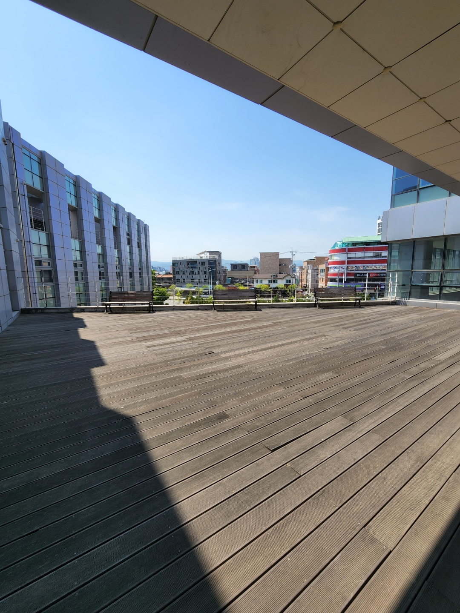
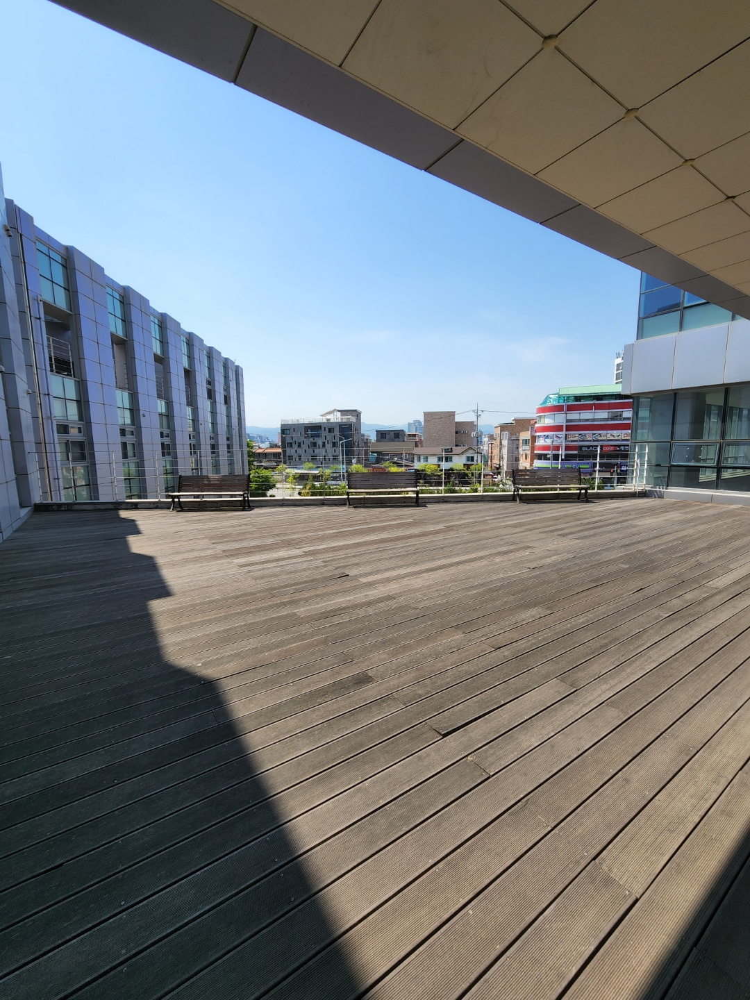

한빛관은 공과대학6호관과 같이 컴퓨터학부 재학생이라면 주로 가게 될 건물이다.
가장 최근에 지어진 건물이기 때문에 깔끔하고 건물 내부에 학생이라면 모두가 사용할 수 있는 시설이 많다.
1층에는 '마운틴'이라는 카페가 있다.
2층에는 창조경제 혁신센터가 있다. 창업과 취업에 관련되어 있기 때문에 관심이 있다면 좋은 정보를 얻을 수 있을 것이다.
3층과 4층에는 강의실 및 학과 사무실, 테라스, 스터디 공간 등이 있다.
한빛관 건물 외부에는 학생들이 쉴 수 있는 공원이 있다.